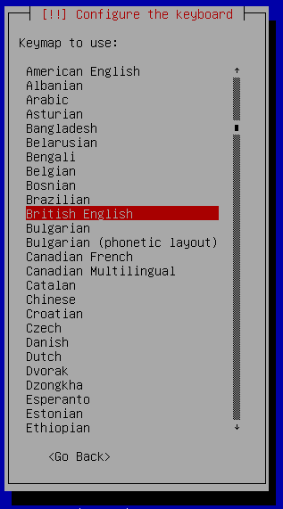
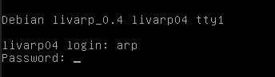
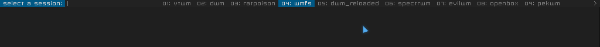
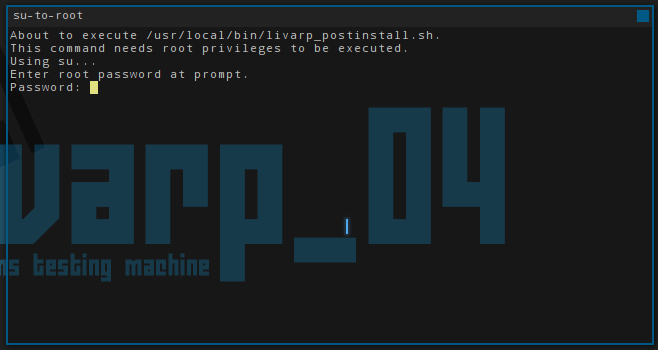

lang fr|gb

installation
livarp installation takes 7~15 minutes. an active internet connection is a good point but not necessary.
the installer is available from the start syslinux menu, scroll down to install and follow instructions.

installer is the regular Debian one, for more informations, please consult the Debian wiki.



(...)

once the installation process is finish, your computer will reboot. you just have to choose your session and run post-install-script (auto mode).




post-installation
on first boot, the post-install script auto-launch to finish the installation process. root password asked..
